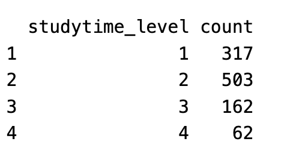
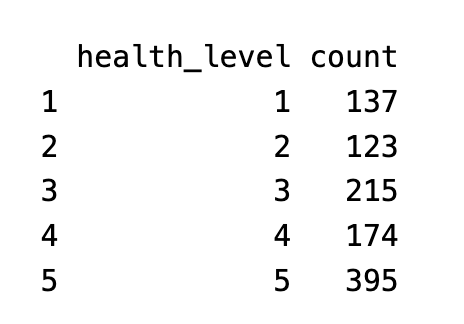
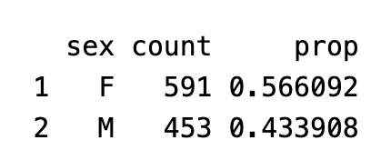
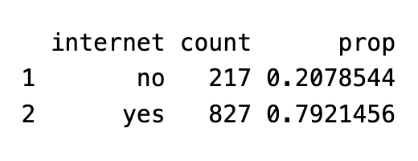
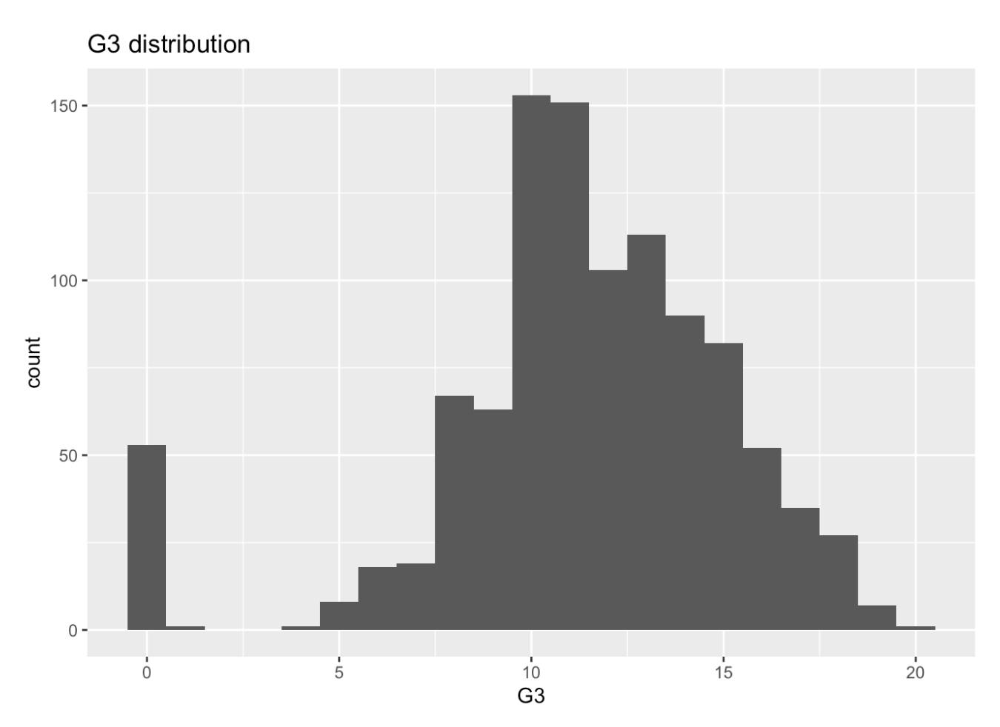
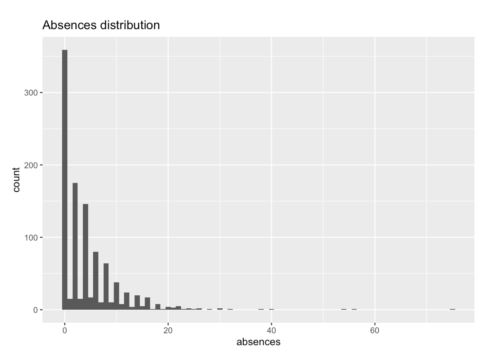
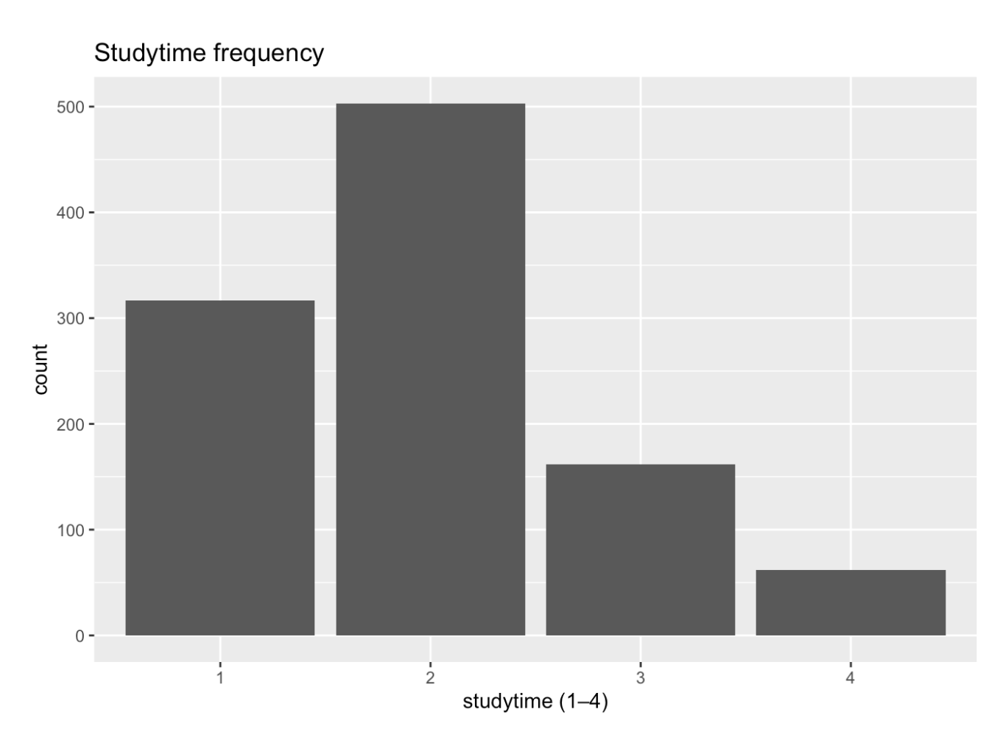
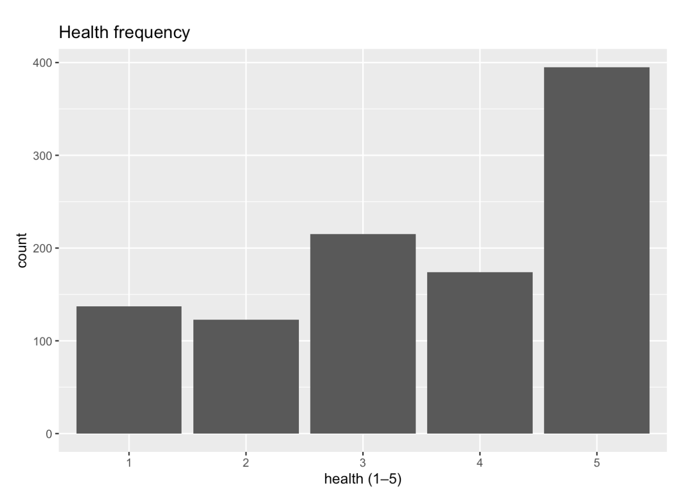
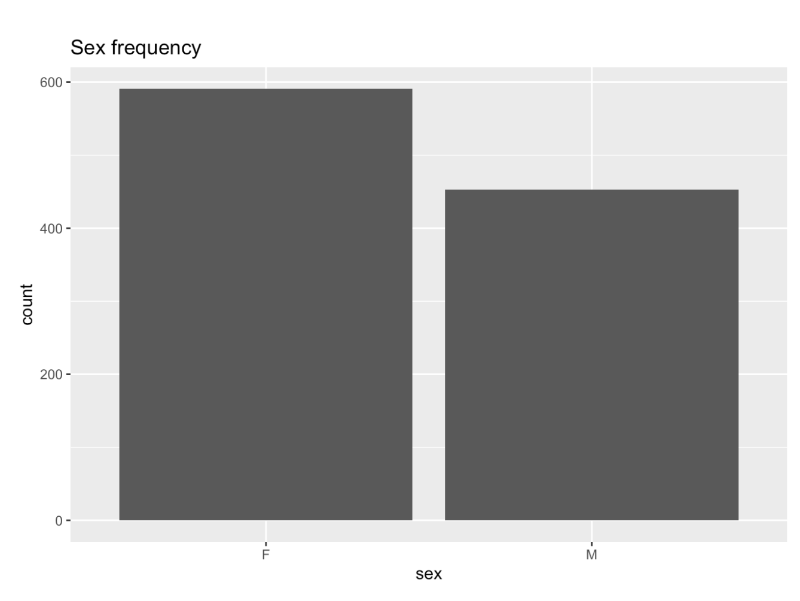
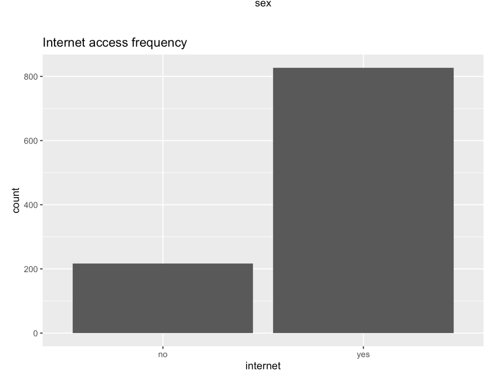

Dataset overview
This project uses the UCI Student Performance dataset, which contains information about secondary school students in Portugal. The dataset includes background information about students, their study habits and lifestyle, and their academic performance.
The data originally comes in two separate files: one for Math and one for Portuguese.
I combined both datasets and added a subject column so it is clear which class each observation comes from.
The final dataset includes 1,044 students.
Source: UCI Student Performance Dataset
Bias / limitations
- The data only includes students from a small number of schools in Portugal, so results may not generalize to other populations.
- Some variables (such as study time and health) are self-reported and may not be perfectly accurate.
- This is observational data, so the results show associations rather than cause-and-effect relationships.
Summary (variables used)
- G3 – final course grade (0–20)
- absences – number of missed school days
- studytime – weekly study time (1–4 scale)
- health – self-reported health (1–5 scale)
- sex – student gender
- internet – internet access at home
Summary statistics
The tables below summarize two quantitative variables (G3, absences), two ordinal variables (studytime, health), and two categorical variables (sex, internet).
G3 and absences

The average final grade is 11.3 (on a 0–20 scale), so most students perform in the middle range. Absences vary widely (mean = 4.4, max = 75), meaning most students miss few days but a small group misses a lot.
Studytime levels

Most students report low to moderate study time, with many studying 2–5 hours per week. Only a small group studies more than 10 hours.
Health levels

Health ratings lean positive overall, with most students reporting average to very good health. The largest group rated their health at the highest level.
Sex

The dataset includes slightly more female students (56.6%) than male students (43.4%).
Internet access

Most students (about 79%) report having internet access at home, while about 21% do not.
Distributions
Final grade (G3)

Most students cluster around mid-range grades (roughly 10–14), with fewer students at the extremes. There is also a small spike at 0, which may reflect students who failed or did not complete the course.
Absences

Absences are strongly right-skewed: most students miss only a few days, but a small number of students have very high absence counts.
Studytime

The most common studytime level is 2 (2–5 hours per week), followed by level 1 (<2 hours). Levels 3–4 are much less common.
Health

Health ratings lean positive overall. The highest category (5) is the most frequent, while low health ratings (1–2) are less common.
Sex

The dataset contains slightly more female students than male students, but the split is not extreme.
Internet

Most students report having internet access at home, which could affect access to learning resources.
Relationships
I looked at a few relationships to see which factors might be connected to final grades.
Final grade by studytime

Students who report higher studytime tend to have slightly higher median final grades.
Click to cycle through the relationship plots.
Testable hypotheses
Hypothesis 1
Students who study more (levels 3–4) will have higher average final grades than those who study less (levels 1–2).
Hypothesis 2
A higher number of absences will be associated with lower final grades.
Hypothesis 3
Students with internet access will have higher grades, and the effect may differ between Math and Portuguese.